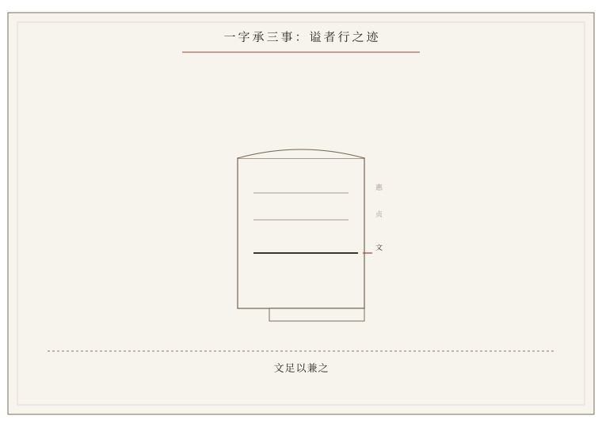

檀弓下 · 四·四十九 · 第 374 课
公叔文子卒，其子戍请谥于君，曰：「日月有时，将葬矣。请所以易其名者。」君曰：「昔者卫国凶饥，夫子为粥与国之饿者，是不亦惠乎？昔者卫国有难，夫子以其死卫寡人，不亦贞乎？夫子听卫国之政，修其班制，以与四邻交，卫国之社稷不辱，不亦文乎？故谓夫子贞惠文子。」
说什么事：卫大夫公叔文子死了，将葬，其子请求赐谥。国君数其平生三事：饥年施粥，是惠；国难时以死护君，是贞；执国政、修班制、交四邻而不辱社稷，是文。遂谥「贞惠文子」。
落在哪一层：以「行」定「名」。一个人的名字，最后要由他做过的事来说。
为何编在此位：上卷末论杜蕢三酌，是活着的人替死者的名分计较；此节是死后由君替他一字一字地算。一名之定，是礼给一个人最后的位置。
【经】公叔文子卒，其子戍请谥于君，曰：「日月有时，将葬矣。请所以易其名者。」君曰：「昔者卫国凶饥，夫子为粥与国之饿者，是不亦惠乎？昔者卫国有难，夫子以其死卫寡人，不亦贞乎？夫子听卫国之政，修其班制，以与四邻交，卫国之社稷不辱，不亦文乎？故谓夫子贞惠文子。」
【注】文子，卫献公之孙，名拔，或作发。／谥者，行之迹。有时，犹言有数也，大夫士三月而葬。／君，灵公也。／难，谓鲁昭公二十年盗杀卫侯之兄絷也。时齐豹作乱，公如死鸟。／班制，谓尊卑之差。／后不言贞惠者，文足以兼之。
【疏】此一节论请君诔臣之谥法，各依文解之。／案《世本》：「卫献公生成子当，当生文子拔。」拔是献公孙也。「或作发」者，以《春秋左氏传》作发，故云「或作发」。／「请所以易其名」者，生存之日，若呼其名，今既死将葬，故请所以诔行为之作谥，易代其名者。／案《谥法》：「爱民好与曰惠，外内用情曰贞，道德博闻曰文。」既有道德，则能惠能贞，故郑云：「后不言贞惠者，文足以兼之。」案文次先「惠」后「贞」，此先云「贞」者，以其致死死君事重，故在前。
公叔文子 卫献公之孙，名拔（一作发）。
请谥 请君赐谥号。
日月有时 指葬期有定数。注「大夫士三月而葬」。
易其名 换掉他生前的名。生称名，死称谥。
凶饥 荒年。
为粥与国之饿者 煮粥给国中饥民。
有难 国难。注指昭公二十年齐豹之乱。
班制 尊卑之等级差次。
社稷不辱 国家不受辱。
贞惠文子 三字之谥。
公叔文子死了，其子戍向国君请求赐谥，说：「葬期有定数，将要下葬了。请赐一个用来替换他名字的称号。」国君说：「从前卫国大饥，先生煮粥给国中饥饿的人，这不是惠吗？从前卫国有难，先生以死护卫寡人，这不是贞吗？先生执掌卫国政事，修明尊卑班次，与四邻交往，使卫国社稷不受辱，这不是文吗？所以称先生为贞惠文子。」
此章记一次命名。名不是家人给的，是国君依其行事给的。
三字，三事，一件比一件大：惠及饿者，贞及君身，文及社稷。
郑注一句「文足以兼之」，便把三字收到一字。
第一层 谥者，行之迹 注四字最要紧：「谥者，行之迹。」
谥不是评价，是痕迹。 一生做过什么，便留下一道什么印；谥号是把这道印刻成一个字。
故请谥之事不能由家人自定，也不能由死者自定——迹在人不在己。
第二层 「请所以易其名」 疏云：「生存之日，若呼其名，今既死将葬，故请所以诔行为之作谥。」
一句话说出礼对「名」的处理：活着叫名，死了叫谥。名是给活人唤的，谥是给后人记的。
此一换，是把「你」从关系里取出，放进历史里。
第三层 三事之序 君先言惠、次言贞、末言文，而谥作「贞惠文」，以贞居首。
疏辨此序：「以其致死死君事重，故在前。」
次序即是轻重。 三件好事不是并列的：能施粥者众，能死君者少，能安社稷者更少。礼把最重的一件放在前面。
第四层 「文足以兼之」 既谥三字，何以只称「文子」？
郑答：文兼惠贞。疏引《谥法》：「道德博闻曰文。」有道德，则能惠能贞。
此一层最见古人对「文」的理解：文不是文章，是能把诸德收在一处的那个容量。
第五层 谥不由子孙请而定于君 请者，其子；定者，其君。
此一分工，防的是「孝子必欲其父美」。 家人请，君断；请者有情，断者有位。
今之自撰墓志、自定评价者，正缺这一断。
第六层 一字之重 三字之谥，后人只称一字；公文、史传、子孙之口，皆曰「文子」。
礼给一个人的最后位置，往往只有一个字。 一字之内，要装下三件事；装不下，便是这个字选错了。
与今日何干 今人评价一个人，多在其生时；古人定其名，多在其身后。
此章给一个尺度：一个人值什么，看他留下几道痕迹，不看他说过几句什么。
| 左 | 右 |
|---|---|
| 卒 | 名将易 |
| 其子戍请 | 请者家人 |
| 君曰 | 定者国君 |
| 为粥与饿者 | 惠 |
| 以死卫寡人 | 贞 |
| 修班制交四邻 | 文 |
| 贞惠文 | 三字 |
| 称文子 | 一字兼三 |
| 行之迹 | 名后于事 |
画一块立在庭中的碑，视点平视，碑面朝观者。碑为长方形，顶作缓弧，下承一短座。碑面上刻三道横痕，自上而下依次排列：上两道浅，最下一道深且略长。碑前地上放着一只未启的简册，卷着。不画文字。赭色只用在那最下一道深痕的末端。
